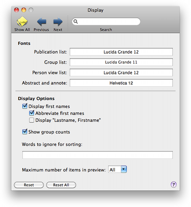

Display Display
Display DisplayThis preference pane lets you control the overall appearance of the main window.

Fonts: You can select the font to use in various interface elements. Selecting a font item will call the system's font panel, from which you can change the font for the selected element. You can also change the fonts directly from the interface elements themselves. Call the font panel using "View > Show Fonts" in the main menu, or from the contextual menu of the interface element.
Display first names: You can change the way names are displayed in the 'Author' columns and in the groups pane.
Publication List: In the table, you can add a custom set of words, such as 'the' and 'a', that will be ignored when sorting the table.
Show group counts: Choose whether you want to display the count bubble in the group list. When you have many smart groups, hiding the count bubbles can improve performance.
Maximum number of items in preview: You can limit the maximal number of items to be shown in text previews in the bottom and side preview pane. Generating the preview can be slow when many items are chosen.